釜山珍寺大作戦
おまけ
釜山珍寺大作戦、お付き合いいただきましてありがとうございました。
最後にオマケというかロスタイムというか釜山で感じたアレコレをだらだらと垂れ流させてもらいます。
特にお寺の話とかないので興味ない方はスルー、ということでよろしく。
その1：看板
とにかく言葉の壁が厳しかった。
日本から一番近いガイコク、な筈なのに街の看板がまっっっっったく判らない。
言葉も判らない。いや、こっちが一切勉強してないのが悪いのは重々承知しているが、台湾や中国では少なくともこんな事はない。
全く文字の読めないスリランカやミャンマーでも英語表記の看板はもう少しあったし、少なくとも何の店かは看板などなくても察しが付くものだが…。
きっと韓国の人も福岡に行って「韓国語全然通じないジャンかよおー！」とお嘆きになっていることであろう。
例えばとある郊外の駅前。昼時、腹ペコ。せっかくだから旨いモノ。などと思っていても↓こんな感じ。
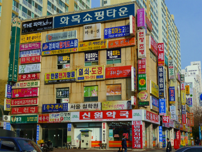
…日本に来る「ガイジン」さんがいかに大変か、がよ〜く判りました。
英語も通じないし（涙）…。
その2；色
やはり派手な色が目に付く。
釜山の繁華街、西面にあったダンス衣装屋さん。
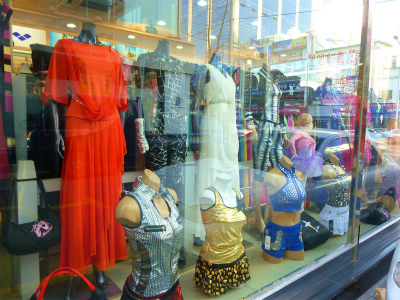
↓オニオンスライス的なものだが、練ワサビが目に鮮やかなライムグリーン。お寺の軒下と同じ色ですね。
味が日本のものと一緒なだけにショック倍増。
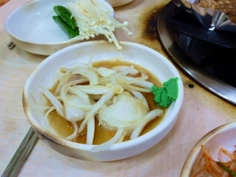
3；地下鉄
意外なところにビジネスチャンスは転がっているものだ。
一番驚いたのは地下鉄の車両内で始まる物品販売。
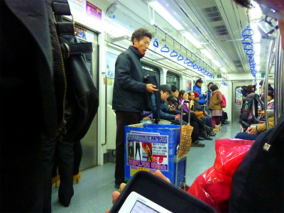
地下鉄に乗っているとおもむろにカートを引いたおっさんがセールストークを始める。
何を言っているかは判らないが、多分「このストッキングは新素材で超暖かいので買うが良いでしょう」的なことを言っているみたい。
車内の客は全員シカト。そりゃそうだ。
買う人がいないと判断したおっさん、店をたたんで次の車両へと移動しようとする、その刹那、黙って座ってた爺さんがいきなり声をかけて買っているじゃないの！しかも2つ！…意外と良い商売なのかも知れないぞ。
ちなみに後日、同じ手法で物乞いも乗ってきました。乗客の膝の上に「私はこんなに不幸な身の上なんです」と書かれた（多分）紙を置き、ひとしきりアピールした後（さすがにコレは全員シカトだった）、おもむろに膝の上の紙を回収してとっとと次の車両へと移動していった。こんなのアリなのかー。俺の膝の上に置かれても読めないんだよねー。ちなみに私の対面に座ってた女子二人組は物乞いが膝の上に紙を置いても一切動ずることなくおしゃべりを続けてました。どうやら釜山の人にとっては日常茶飯事のことのようです。
釜山の地下鉄はチビッコスリ集団が謳歌するローマの地下鉄並みにエキサイティングだった。
4；商売
日本では見られない商業車両に思いがけず出会うのは旅の醍醐味だ。
靴下屋。
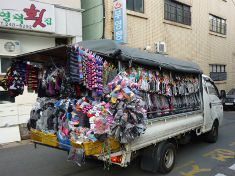
何故靴下だけに特化しているのかは一切謎。
実はこの界隈を結構丹念にウロウロしていたので何度もこの車に遭遇したのだが、売れている様子はなかったな。
みかん屋
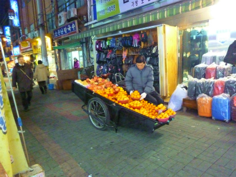
釜山有数の繁華街、南浦洞（ナンポドン）をウロウロしていたら出くわしたみかん屋。韓国でみかんは作られているのだろうか？
もしかしたらスペシャルな果物なのだろうか。
謎の燃焼系屋台
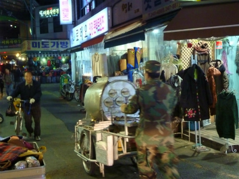
何を売っているのか判らない。石焼芋かもしれないし、全然違う焼きモノかもしれない。いや、ひょっとしたら食べ物ですらないかもしれない。
迷彩服姿のおっさんが押しているだけに謎具合もひときわ、なのである。
コーヒー自販機
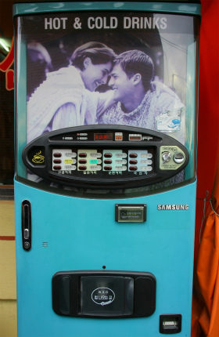
日本でも良く見かけるカップ式のコーヒーの自販機。
これが滅法安い。一番安くのは200ウォン、つまり15円ほど。
これが街のあちこちにあるわけですよ。ずいぶん世話になりました。ちなみにコレ↑はかなり旧タイプ。
5；日式住宅
釜山はいわゆる日帝時代に日本人（当時の言い方で内地人というのかな）が多く住んでいた街である。
本編に登場した甘川洞の近くにあった日本家屋。瓦屋根の上に樹脂系のコーティングがされてモフモフしたマチエールになってしまっている。
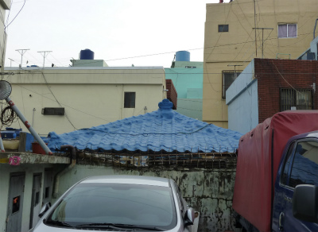 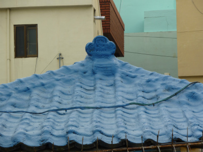
それでも鬼瓦の部分に刻まれている「水」という字はかろうじて読めた。
この周辺には他にも日本家屋が残っているが、そのほとんどは何故か柵と塀で厳重に囲まれていた。
6；墓
韓国の墓は判りやすい。
釜谷ハワイに行く途中のバスからの眺め。
↓右上に土饅頭が二つ並んでいるのがお判りだろうか?
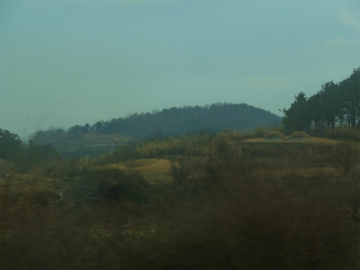
これが韓国の伝統的な墓のカタチである。
で、↓こちらはいわゆる古墳。
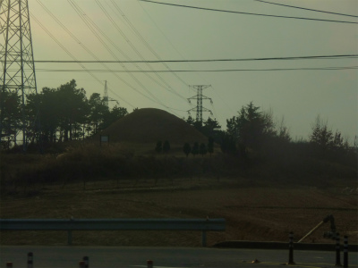
古墳も現代の墓もほぼ同じ姿なのだ。
逆に言えば何故日本では古墳と墓がこんなにも違っちゃったんだろう？
日本と韓国、恐らく根っこは似ているのにどこでどう違う歩みを始めたんだろう？
日本と韓国。
どこが同じでどこが違うのか、客観的に見極めないといつまでたっても感情論先行の不毛な議論ばかりが跋扈する羽目になってしまうような気がする。
7；本歌取り、あるいは…
釜山郊外にある世界一大きいデパート、新世界センタムシティーに行った。
お目当てはもちろんチムジルバン（健康ランド）での修行、なのだが、隣にあるロッテデパートのエントランスも凄かった。
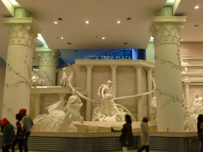
トレヴィの泉をイメージした荘厳な噴水と彫像群。
お金、余ってるんだなー。
一方、某ハワイにて。
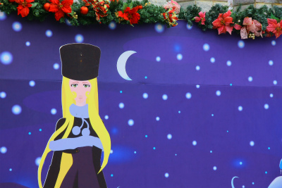
たまたまあの人に似ちゃったんだと思う。
偶然、偶然。
隣に描かれているのも…偶然似ちゃったんでしょう…。
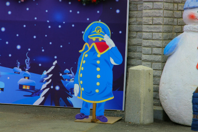
原作のセンセイ、その辺厳しそうだけど、大丈夫なのか？
もっと厳しそうなキャラもあったが、コレならすぐ溶けちゃうから、版権的にもオッケー、なのかな？
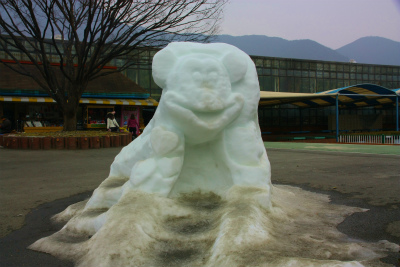
8；建物
釜山にはラブホ建築が凄く多い。
中心街ではお目にかかれないが、少し郊外に出ると、あるはあるは。ここは京都インターか、つー位ある。
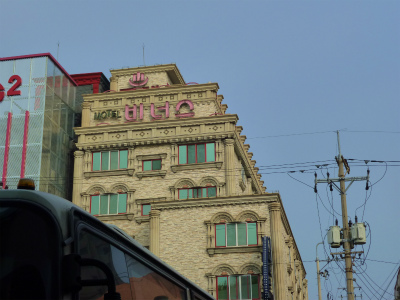
↑コレは沙上バスターミナル前のラブホ。
ピンクの温泉マークが燦然と輝くラブホは驚くほど日本のそれと似ている。
他にも海東龍宮寺の近くの松亭駅付近にはかなりぐっとくるラブホ建築が軒を連ねていた。
屋上の塔屋が妙に水門ぽい団地。
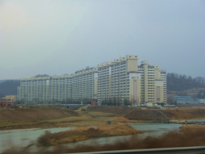
9；話題の人？
時節柄、駅の売店や本屋ではこの人に関する雑誌が数多く出版されていた。
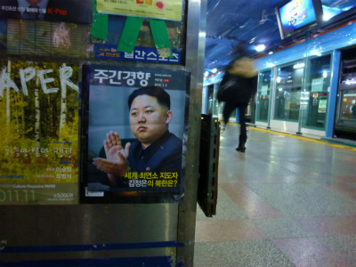
ただ、テレビではほとんど採り上げられていなかった。
あまり関心がないのかな、と思ったほどそっけない反応だった。
というわけで、まとめるつもりもなくこれにてお終いです。
釜山珍寺大作戦
珍寺大道場 HOME